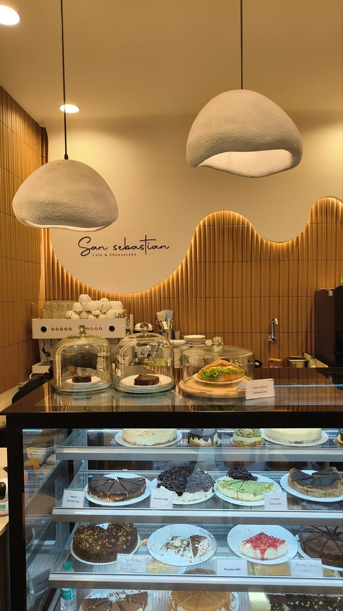
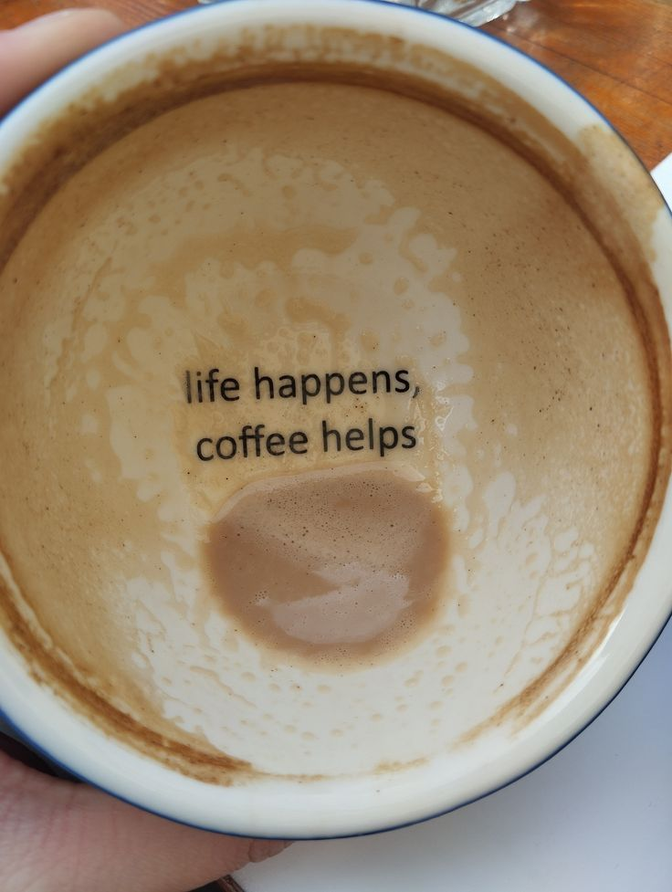
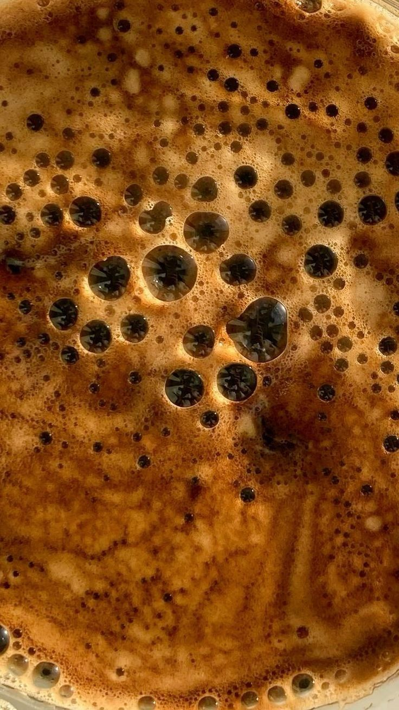
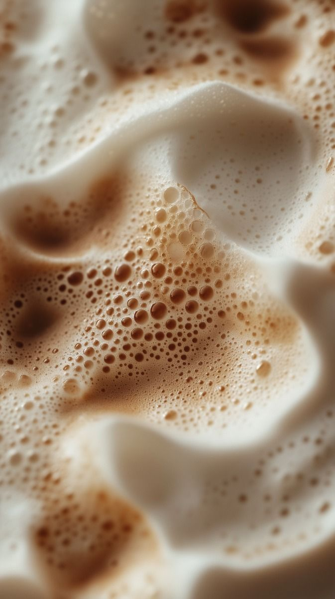
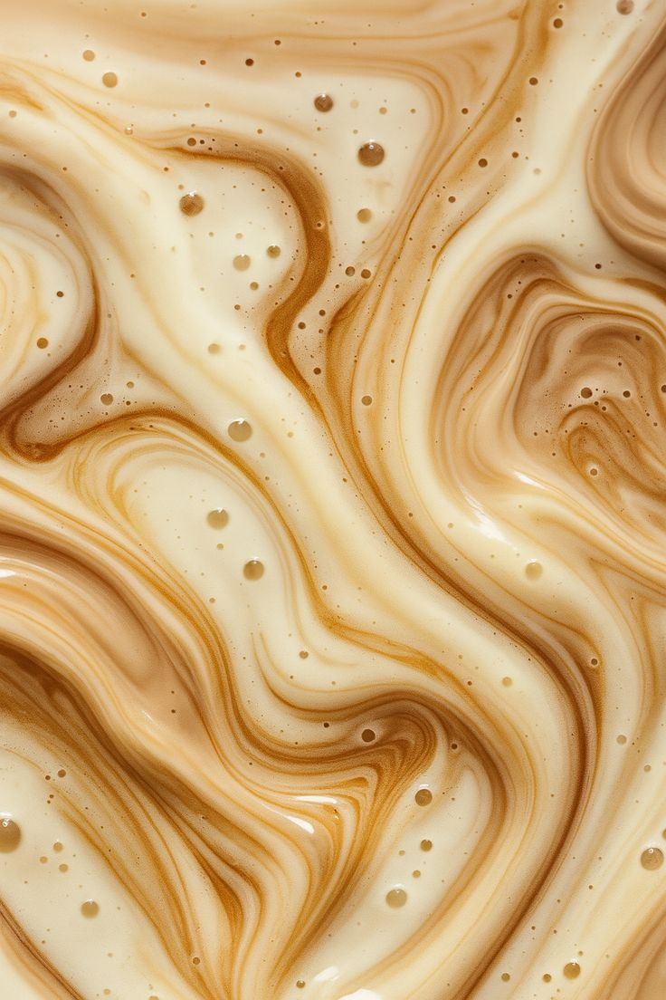

Про нас



Ми — дуже затишна кав’ярня у центрі міста. «Смачна кава» — це місце, де час зупиняється. Ми створили простір, де аромат свіжообсмажених зерен поєднується з теплом дружніх розмов. Незалежно від того, чи шукаєте ви натхнення для роботи за горнятком капучино, чи хочете провести тихий вечір у затишному куточку — ми вже приготували для вас ідеальне місце. Спробуйте момент на смак!



Контакти
м.Бровари, вул. Київська, 219
+380 97 123 45 67